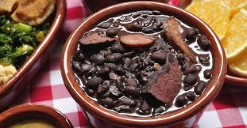
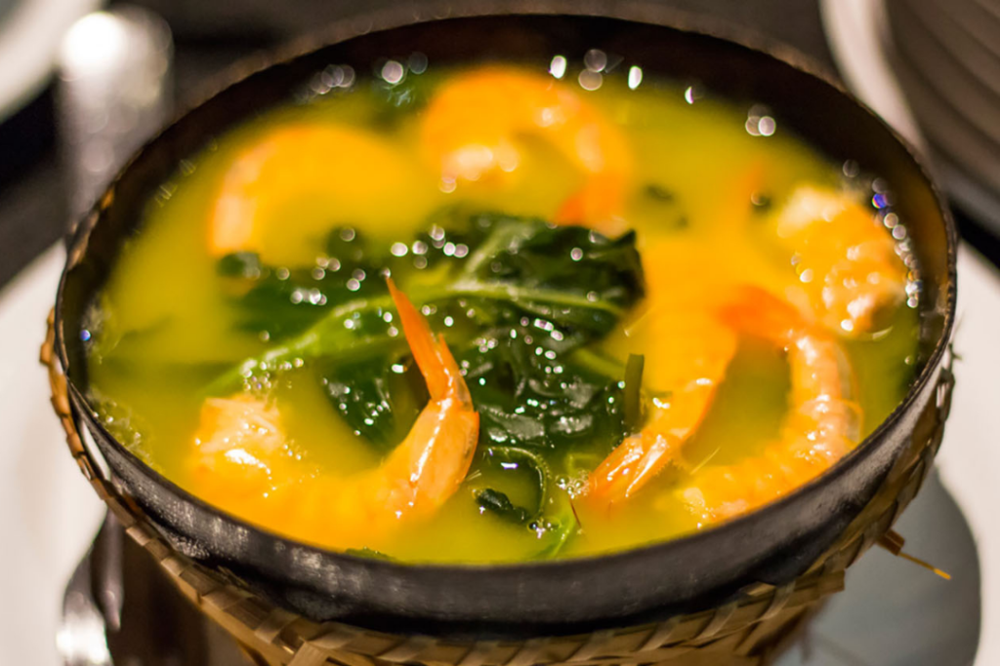
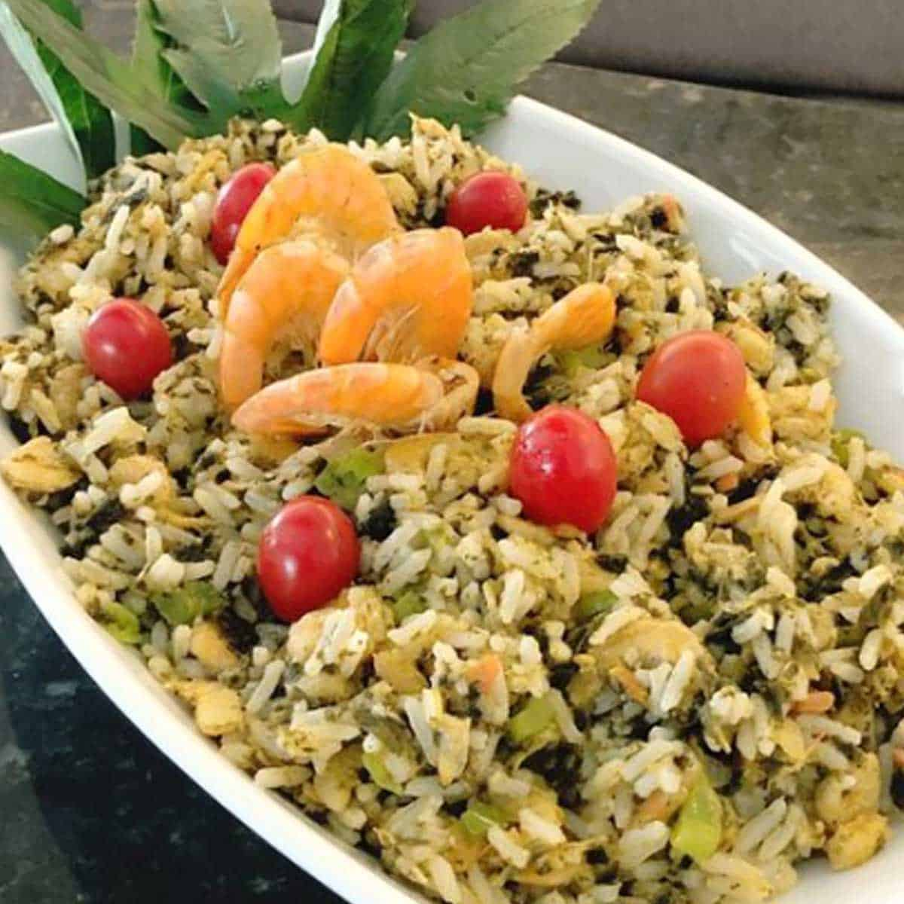

A gastronomia do Rio de Janeiro é marcada pela mistura de influências africanas, indígenas e portuguesas. Pratos como a feijoada, o biscoito Globo e o mate gelado fazem parte do dia a dia. Frutos do mar como peixe, camarão e lula também são muito consumidos nas regiões litorâneas.

A culinária amazônica é rica e ligada à natureza. Ingredientes como tucupi, jambu e mandioca são base de pratos como tacacá e pato no tucupi. Peixes como pirarucu e tambaqui são muito valorizados, trazendo sabores únicos da região.

A gastronomia dos Lençóis Maranhenses mistura influências nordestinas e litorâneas. Pratos com frutos do mar, arroz de cuxá e peixes grelhados são comuns, com forte presença de temperos indígenas e africanos.